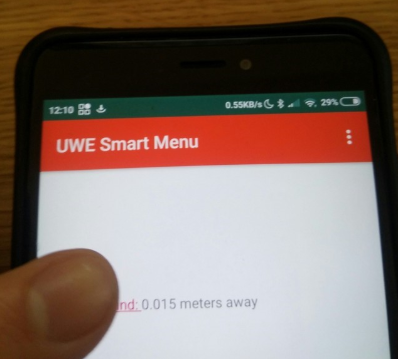
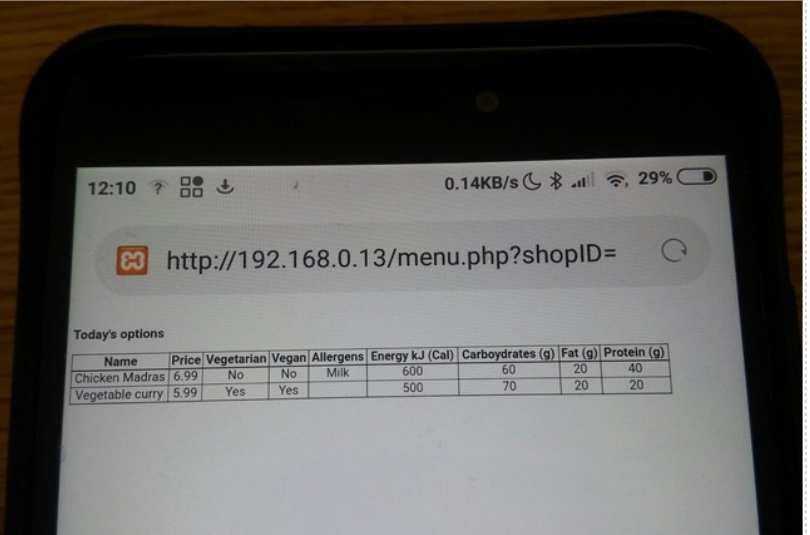

Smart-Menu
Smart-Menu for Android was developed using Android Studio as a proof of concept for implementing Bluetooth beacons in UWE's catering areas as part of a university project. The Bluetooth beacons deliver location specific content to the user's device by broadcasting a URL. A library from the Android Beacon Library by Radius Networks was imported providing an API for interacting with Bluetooth Beacons.
The app starts scanning for beacons when first opened:
When a beacon is detected it is displayed with its distance:
Allowing the user to click the hyper-link:

Which opens their web browser and directs them via a shortened URL:
To the web page displaying the items available in that location:

This basic example menu webpage is written in HTML and PHP. The PHP pulls the relevant items for the user’s location from a MySQL database and the HTML displays them along with their information in a table. The PHP GET method is used to determine the user’s location from the URL.
The app also has Clear and Rescan buttons in the menu bar:
The clear button can be used to remove any menu from a previous use when the user is looking for one in a new location, and the rescan button can be used for restarting the device's bluetooth service.'